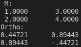

A matrix is a wrapper class for a rank 1 array of vector objects.
Matrices can be used to represent a variety of mathematical structures. This class is primarily used
to bind a selection of Linear Algebra algorithms to a matrix object. Matrices can be instantiated by assignment
of a rank2 array of any type, but the underlying data will be stored with double precision.
Matrix multiplication will be consistent with the mathematical operation (matmul), and element wise multiplication shall be represented by the hadamard product (OPERATOR .o.)
type(matrix) :: m, ortho_basis m = reshape([1, 2, 3, 4], [2, 2]) ! Create a 2x2 matrix print*, "M: " call m%print() ortho_basis = m%gram_schmidt() ! Compute an orthonormal basis using the Gram-Schmidt method print"(A)", "Ortho:" call ortho_basis%print()!!
output:

Construct a matrix
Create a new matrix by passing the number of rows (\n) and the number of columns
| Type | Intent | Optional | Attributes | Name | ||
|---|---|---|---|---|---|---|
| integer, | intent(in) | :: | n | The number of rows in |
||
| integer, | intent(in) | :: | k | The number of cols in |
Construct a matrix
| private elemental function matrix_ctr_nk(n, k) | Create a new matrix by passing the number of rows (\n) and the number of columns |
| generic, public :: new => new_, new_matrix_ | Create a new matrix |
| procedure, public :: clear => clear_matrix | Clear all of the elements of a matrix |
| procedure, public :: print => print_matrix | Print the contents of a matrix |
| procedure, public :: vec => access_vector_matrix | Get the kth vector in the matrix |
| procedure, public :: at => at_index_matrix | Get the element at the index (i, j) |
| procedure, public :: gram_schmidt => gram_schmidt_matrix | Compute an otrthonormal basis for the vector space spanned by the columns of a matrix |
| procedure, public :: is_orthonormal => is_orthonormal_matrix | Check whether a matrix is orthonormal |
| procedure, public :: as_array => matrix_as_array | Return a rank2 Fortran array |
| generic, public :: set => set_int_, set_r32_, set_r64_ | Set the value of (a_{i,j}) |
| generic, public :: assignment(=) => from_array_int_, from_array_r32_, from_array_r64_, from_matrix | Assign the contents of a matrix from a rank2 Fortran array |
| procedure, public :: get_row => matrix_get_row | |
| procedure, public :: get_col => matrix_get_col | |
| generic, public :: set_row => set_row_int_, set_row_r32_, set_row_r64_, set_row_vec_ | |
| generic, public :: set_col => set_col_int_, set_col_r32_, set_col_r64_, set_col_vec_ | |
| procedure, public :: set_row_int_ => matrix_set_row_array_int | |
| procedure, public :: set_row_r32_ => matrix_set_row_array_r32 | |
| procedure, public :: set_row_r64_ => matrix_set_row_array_r64 | |
| procedure, public :: set_row_vec_ => matrix_set_row_vec | |
| procedure, public :: set_col_int_ => matrix_set_col_array_int | |
| procedure, public :: set_col_r32_ => matrix_set_col_array_r32 | |
| procedure, public :: set_col_r64_ => matrix_set_col_array_r64 | |
| procedure, public :: set_col_vec_ => matrix_set_col_vec | |
| generic, public :: operator(+) => add_matrix_ | Operator interface to add two matrices |
| generic, public :: operator(*) => times_matrix_, times_vector_ | Operator interface to multiply two matrices |
| generic, public :: operator(.o.) => hadamard_ | |
| generic, public :: plus => add_matrix_sub_ | Subroutine interface to add two matrices |